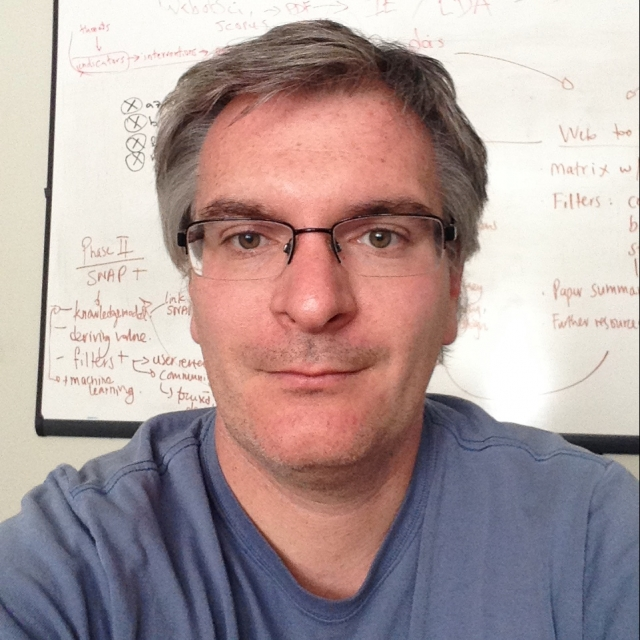

Our Team
Because we live in an era where we may only meet in person sporadically, we felt it would be nice to introduce ourselves here to help you put a face to the emails / Slack messages / GitHub issues we exchange going forward!
Julien Brun
Personal Website - GitHub - @brunj7

As a senior data scientist, Julien helps our synthesis working groups to transform their data and computing challenges into solvable tasks. While promoting reproducible science-based practices, Julien advises and trains our experts on how to best combine and analyze heterogeneous data sets, as well as scaling their analysis. He is also an instructor in our data science training efforts.
Julien’s scientific expertise is in ecohydrology, Earth observation techniques (remote sensing and GIS), and process-based models.
Prior to obtaining his Ph.D. in Civil and Environmental Engineering at Duke University, Julien conducted several projects on land cover change, vegetation monitoring, and disaster mapping for governmental and international institutions.
Angel Chen
Angel supports LTER synthesis working groups by developing data pipelines and reproducible analytical workflows to integrate various sources of data. Angel previously worked as a data curator for the Arctic Data Center, helping researchers archive and store their data. Angel recently completed a B.S. in statistics & data science at the University of California, Santa Barbara.
Nick Lyon
Personal Website - GitHub - @scilyon
Nick focuses on supporting LTER synthesis working groups in the acquisition and management prerequisite to analysis and visualization. Nick is a trained restoration ecologist focusing on interacting communities of plants and insects and has extensive experience taking “raw” field-collected data and readying it for hypothesis testing in a rigorous, transparent way. Nick completed his MS in Ecology and Evolutionary Biology at Iowa State University